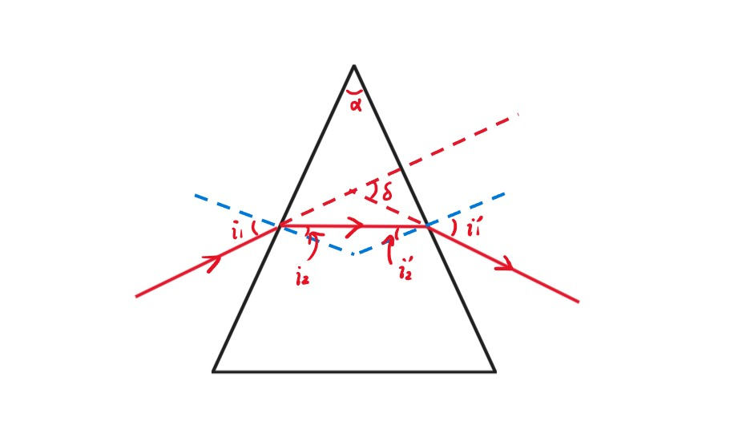

Chapter11 几何光学
11.1 基本概念
几何光学三定律：
- 光沿直线传播
- 反射定律： 入射角 = 反射角
- 折射定律： $n_1\sin\theta_1=n_2\sin\theta_2$
折射率（index of refraction）：
已知
$$c=\frac{1}{\sqrt{\varepsilon_0\mu_0}}$$
$$v=\frac{1}{\sqrt{\kappa_e\kappa_m\varepsilon_0\mu_0}}$$
对于大部分材料
$$\kappa_m\approx 1$$
因此
$$v\approx\frac{c}{\sqrt{\kappa_e}}$$
由折射率定义
$$v=\frac{c}{n}$$
因此
$$n\approx\sqrt{\kappa_e}$$
Note
事实上，$n$还和光的频率有关，因此不同频率的光折射率不同，频率越大折射率越大。
棱镜（prism）：

如何得到棱镜的折射率$n$？
通过调整入射光的角度，可以得到$\delta$的最小值$\delta_{\min}$。
$$\delta=(i_1-i_2)+(i_1'-i_2')=(i_1+i_1')-(i_2+i_2')=(i_1+i_1')-\alpha$$
两边对$i_1$求导（$\delta$随着$i_1$的变化而变化）
$$\frac{d\delta}{di_1}=1+\frac{di_1'}{di_1}=0$$
$\delta$取$\delta_{\min}$时导数为0
$$\frac{di_1'}{di_1}=-1,~i_1'=-i_1$$
负号标明$i_1$增大时$i_1'$减小，因此实际上的大小关系为$i_1=i_1'$，此时$\delta$取$\delta_{\min}$。
$$i_2=i_2'=\frac{\alpha}{2}$$
$$i_1=i_1'=i_2+\frac{\delta_{\min}}{2}=\frac{\alpha+\delta_{\min}}{2}$$
$$n=\frac{\sin(\frac{\alpha+\delta_{\min}}{2})}{\sin\frac{\alpha}{2}}$$
光程：
$$t_{QP}=\frac{\Delta l_1}{v_1}+\frac{\Delta l_2}{v_2}+\frac{\Delta l_3}{v_3}=\sum\limits_{i}\frac{\Delta l_i}{v_i}=\sum\limits_{i}\frac{n_i\Delta l_i}{c}=\frac{(QMNP)}{c}$$
(QMNP)即为光程，指相同时间内，光在真空中走过的路程。
$$(QMNP)=ct_{QP}=\sum\limits_{i}n_i\Delta l_i$$
$$(QP)=\int_Q^Pndl$$
费马原理：
对于空间中固定的点$P$，$Q$，从$Q$到$P$的所有光线的光程的偏微分为0（极值或常数），即光会选择一条路径，使得两点之间传播所需的时间最短。
Example

费马定理推导反射定律：
此时不知道$\theta=\theta'$
$a,b,d$已知，$x$为自变量
光程$L=n(\sqrt{a^2+x^2}+\sqrt{b^2+(d-x)^2})$
由费马定理：$\frac{dL}{dx}-n(\frac{x}{\sqrt{a^2+x^2}}+\frac{x-d}{\sqrt{b^2+(d-x)^2}})=0$
$\frac{x}{\sqrt{a^2+x^2}}=\frac{d-x}{\sqrt{b^2+(d-x)^2}} \Rightarrow\sin\theta=\sin\theta'\Rightarrow\theta=\theta'$
费马定理推导折射定律：
此时不知道$n_1\sin\theta_1=n_2\sin\theta_2$
$a,b,d$已知，$x$为自变量
光程$L=n_1\sqrt{a^2+x^2}+n_2\sqrt{b^2+(d-x)^2}$
由费马定理：$\frac{dL}{dx}=\frac{n_1x}{\sqrt{a^2+x^2}}+\frac{n_2(x-d)}{\sqrt{b^2+(d-x)^2}}=0$
$n_1\frac{x}{\sqrt{a^2+x^2}}=n_2\frac{d-x}{\sqrt{a^2+x^2}}\Rightarrow n_1\sin\theta_1=n_2\sin\theta_2$
11.2 球面镜成像
球面镜折射成像

$Q$点发出两条光线，一条沿直线$Q\rightarrow A\rightarrow Q'$，一条被折射$Q\rightarrow M\rightarrow Q'$，汇聚于$Q'$成像。
在$\Delta MQC$中，由正弦定理：
$$\frac{p}{\sin\phi}=\frac{o+r}{\sin\theta}$$
在$\Delta MQ'C$中，由正弦定理：
$$\frac{p'}{\sin\phi}=\frac{i-r}{\sin\theta'}$$
由折射定律：
$$n\sin\theta=n'\sin\theta'$$
因此综合可得：
$$\frac{p}{n(o+r)}=\frac{p'}{n'(i-r)}$$
由角度关系：
$$\theta-u=\theta'+u'=\phi$$
在$\Delta MQC$中，由余弦定理：
$$p^2=(o+r)^2+r^2-2r(o+r)\cos\phi=o^2+4r(o+r)\sin^2\frac{\phi}{2}$$
在$\Delta MQ'C$中，由余弦定理：
$$p'^2=(i-r)^2+r^2+2r(i-r)\cos\phi=i^2-4r(i-r)\sin^2\frac{\phi}{2}$$
因此综合可得：
$$\frac{o^2}{n^2(o+r)^2}-\frac{i^2}{n'^2(i-r)^2}=-4r\sin^2\frac{\phi}{2}[\frac{1}{n^2(o+r)}+\frac{1}{n'^2(i-r)}]$$
对于固定的$o$，如果$\phi$不同，则$i$不同，意味着折射到的位置不同，不能成像，此时有两种解决方法。
方法一：齐明点
方程两边均为0.则对$\forall\phi$都成立，此时得到$o$和$i$的二元一次方程组，得到唯一的一组解$o$和$i$。
Note
此时不是成像，因为$o$随时要变。
方法二：旁轴近似
只有在十分靠近$A$点光线会在一个位置聚焦，此时$\sin\frac{\phi}{2}\approx 0$。
$$\frac{o^2}{n^2(o+r)^2}=\frac{i^2}{n'^2(i-r)^2}$$
$$\frac{n}{o}+\frac{n'}{i}=\frac{n'-n}{r}$$
当$i\rightarrow\infty$时，对应的$o$就是第一焦距
$$f=\frac{n}{n'-n}r$$
当$o\rightarrow\infty$时，对应的$i$就是第二焦距
$$f'=\frac{n'}{n'-n}r$$
综上
$$\frac{f}{o}+\frac{f'}{i}=1$$
符号约定：
若入射光线从左往右：
$Q$点在$A$点左边，说明是实物，$o>0$
$Q$点在$A$点右边，说明是虚物，$o<0$
$Q'$点在$A$点左边，说明是虚像，$i<0$
$Q'$点在$A$点右边，说明是实像，$i>0$
$C$点在$A$点左边，说明是凹的，$r<0$
$C$点在$A$点右边，说明是凸的，$r>0$
Example

球面镜反射成像
把反射当成折射的一种特例来处理，此时约定符号：
$Q'$点在$A$点左边，说明是实像，$i>0$
$Q'$点在$A$点右边，说明是虚像，$i<0$
Note
个人理解正负还是要看虚实而不是左右。

已有$n\sin\theta=n'\sin\theta'$。若$\theta>0$，则$\theta'<0$，$n=-n'$。在原来的球面镜折射成像中，有焦距$f=\frac{n}{n'-n}r$，代入$n=-n'$，得到$f=-\frac{r}{2}$，同理，$f'=\frac{r}{2}$。代入成像公式$\frac{f}{o}+\frac{f'}{i}=1$得到：
$$\frac{1}{o}+\frac{1}{i}=-\frac{2}{r}$$
Note
$i$要变号，因为原本定义为$i$，此时为$-i$。
横向放大率

旁轴近似：$y^2,y'^2\ll o^2,i^2,r^2$
若$P$（或$P'$）在光轴上方，则$y$（或$y'$）$>0$
若$P$（或$P'$）在光轴下方，则$y$（或$y'$）$<0$
横向放大率：
$$m=\frac{y'}{y}$$
由
$$n\sin\theta=n'\sin\theta'\Rightarrow n\theta\approx n'\theta'$$
$$y\approx o\theta,~-y'\approx i\theta'$$
因此
$$m=\frac{y'}{y}=\frac{-i\theta'}{o\theta}=-\frac{ni}{n'o}$$
Note
对于反射，$i$变号且$n=-n'$，于是有$m=-\frac{i}{o}$。
复合球面镜折射成像
$$\begin{cases} \frac{n'}{i_1}+\frac{n}{o_1}=\frac{n'-n}{r_1}\\ \frac{n''}{i_2}+\frac{n'}{o_2}=\frac{n''-n'}{r_2}\\ \frac{n'''}{i_3}+\frac{n''}{o_3}=\frac{n'''-n''}{r_3} \end{cases}\begin{cases} \frac{f_1'}{i_1}+\frac{f_1}{o_1}=1\\ \frac{f_2'}{i_2}+\frac{f_2}{o_2}=1\\ \frac{f_3'}{i_3}+\frac{f_3}{o_3}=1 \end{cases}\begin{cases} m_1=-\frac{ni_1}{n'o_1}\\ m_2=-\frac{n'i_2}{n''o_2}\\ m_3=-\frac{n''i_3}{n'''o_3} \end{cases}$$
$$\frac{u}{-u'}\approx\frac{\sin u}{-\sin u'}\approx \frac{\frac{1}{o_1}}{\frac{1}{i_1}}=\frac{i_1}{o_1}$$
$$m=-\frac{ni_1}{n'o_1}=\frac{y'}{y}=\frac{nu}{n'u'}\Rightarrow ynu=y'n'u'$$
拉格朗日-亥姆霍兹定理：
$$ynu=y'n'u'=y''n''u''=···$$
11.3 薄透镜成像
薄透镜折射成像
第一次成像：$Q\rightarrow Q_1$，$n\rightarrow n_L$
第二次成像：$Q_1\rightarrow Q'$，$n'\rightarrow n_L$
对于第一个球面，想象$n$的右边全是$n_L$：
$$\frac{f_1'}{i_1}+\frac{f_1}{o_1}=1$$
对于第二个球面，想象$n'$的左边全是$n_L$：
$$\frac{f_2'}{i_2}+\frac{f_2}{o_2}=1$$
因此有
$$f_1=\frac{n}{n_L-n}r_1,~f_1'=\frac{n_L}{n_L-n}r_1$$
$$f_2=\frac{n_L}{n'-n_L}r_2,~f_2'=\frac{n'}{n'-n_L}r_2$$
由于薄透镜的$d\ll 0$，因此
$$-o_2=i_1-d\Rightarrow o_2=d-i_1\approx -i_1$$
因此代入
$$\begin{cases} \frac{f_1'f_2}{i_1}+\frac{f_1f_2}{o_1}=f_2\\ \frac{f_1'f_2'}{i_2}-\frac{f_1'f_2}{i_1}=f_1' \end{cases}$$
相加得到：
$$\frac{f_1'f_2'}{i_2}+\frac{f_1f_2}{o_1}=f_1'+f_2$$
对于薄透镜，我们可以定义$i_2=i$，$o_1=o$，因此可以得到
$$\frac{f_1'f_2'}{i}+\frac{f_1f_2}{o}=f_1'+f_2$$
再给出定义$f=\frac{f_1f_2}{f_1'+f_2}$，$f'=\frac{f_1'f_2'}{f_1'+f_2}$，则
$$\frac{f'}{i}+\frac{f}{o}=1$$
相关公式
磨镜者公式：
由于
$$f'=\frac{f_1'f_2'}{f_1'+f_2}=\frac{\frac{n_L}{n_L-n}\cdot\frac{n'}{n'-n_L}r_1r_2}{\frac{n_L}{n_L-n}r_1+\frac{n_L}{n'-n_L}r_2}=\frac{n'}{\frac{n_L-n}{r_1}+\frac{n'-n_L}{r_2}}$$
$$f=\frac{f_1f_2}{f_1'+f_2}=\frac{\frac{n}{n_L-n}\cdot\frac{n_L}{n'-n_L}r_1r_2}{\frac{n_L}{n_L-n}r_1+\frac{n_L}{n'-n_L}r_2}=\frac{n}{\frac{n_L-n}{r_1}+\frac{n'-n_L}{r_2}}$$
因此
$$\frac{f'}{f}=\frac{n'}{n}$$
若$n=n'=1$则有磨镜者公式：
$$f=f'=\frac{1}{(n_L-1)(\frac{1}{r_1}-\frac{1}{r_2})}$$
高斯公式：
若$n=n'$，$f=f'$，则由公式$\frac{f}{o}+\frac{f'}{i}=1$，可以推出高斯公式：
$$\frac{1}{o}+\frac{1}{i}=\frac{1}{f}$$
牛顿公式：
若物与第一焦点的距离为$x$，像与第二焦点的距离为$x'$，则
$$o=f+x,~i=f'+x'$$
代入高斯公式得：
$$\frac{1}{f+x}+\frac{1}{f'+x'}=\frac{1}{f}$$
得到牛顿公式：
$$xx'=f^2=ff'$$
符号定义：
对于凸透镜，第一个球面的$r_1$为正，第二个球面的$r_2$为负。
对于凹透镜，第一个球面的$r_1$为负，第二个球面的$r_2$为正。
假设第一焦点在第二焦点左边，若物在第一焦点左边，则$x>0$，若物在第一焦点右边，则$x<0$；若像在第二焦点左边，则$x'<0$，若像在第二焦点右边，则$x'>0$。
薄透镜的横向放大倍数
$$m_1=-\frac{ni_1}{n_Lo_1},~m_2=-\frac{n_Li_2}{n'o_2}$$
定义
$$m=m_1m_2=\frac{-ni_1}{n_Lo_1}\cdot\frac{-n_Li_2}{n'o_2}=\frac{ni_1i_2}{n'o_1o_2}\approx-\frac{ni}{n'o}=-\frac{fi}{f'o}$$
代入牛顿公式：
$$m=-\frac{f(f'+x')}{f'(f+x)}=-\frac{f}{x}=-\frac{x'}{f'}$$